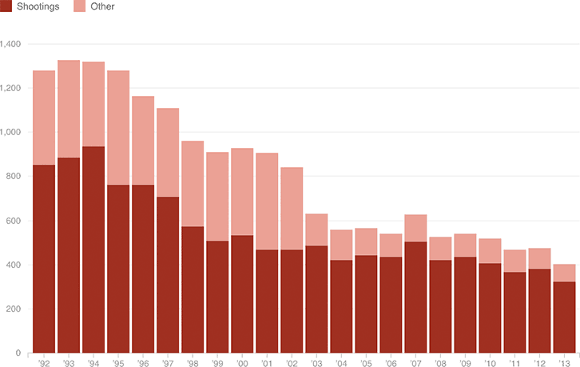

Fewer Workplace Homicides, But Shootings Make Up A Larger Share
In 2013, there were 404 workplace homicides in the U.S., of which 80 percent were shootings. For comparison, in 1992 there were 1,281 workplace homicides, of which 67 percent were shootings.
